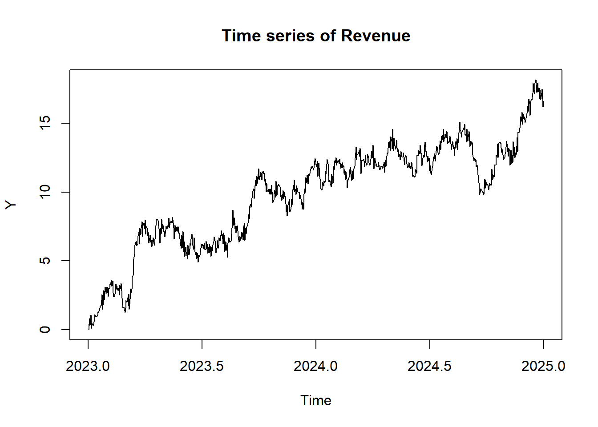
Advanced Data Analytics - D213 Task 1
Part I: Research Question
A1. Can the ARIMA model effectively forecast 180 days of telecom revenue data with high accuracy?
A2. The main purpose of this assessment is to evaluate the ARIMA model’s ability to accurately forecast 180 days of revenue data. The objective is to assess the model’s performance by comparing its forecasts to the actual observed revenue values from the test data.
Part II: Method Justification
B1. Time series models assume that the data is stationary (GeeksforGeeks, 2024), meaning that the mean and variance remain constant over time. Additionally, time series models typicaly rely on autocorrelation, where past values influence current ones. This is important because models like ARIMA leverage this correlation to identify patterns over time, enabling accurate forecast pred
Part III: Data Preparation
C1. The time series plot shows a clear upward trend over the years. There appears to be some variability along the way without any imediate signs of patters or seasonality. These will be investigated further later.
C2. The time step formatting required that the days be converted into a proper date format. In this time series model I chose to start the date on 2023-01-01 and ending on 2024-12-31 as shown in the code range(data$Day).
[1] "2023-01-01" "2024-12-31"This formatting uses daily intervals to ensure a regular time step without any gaps. However, to ensure that there were no gaps, I ran any(is.na(data)) and length(data$Day). Lastly the data is converted into a time series object with a yearly frequency of 365 observations per year.
There are 731 rows of data.Missing values: FALSEC3. I checked stationarity using the Augmented Dickey-Fuller (ADF) test. Initially the test returned a p-value of 0.02431 when ran on the original data. A p-value of this size suggests that the data is stationary (StatisticsHowTo, n.d.). However, there is a visible trend in the data.
The ndiffs() function suggests that time series data needs differencing. I differenced the data and accounted for seasonality (DY <- diff(Y, s = 1)) and ran ADF on the differenced data. The new p-value shows improved stationarity and a more significant result at .01 as well as removal of the trend.
The seasonal differencecing accounts for the yearly seasonality that appears to occur once a year. I will explain more about this in the coming sections.
Augmented Dickey-Fuller Test
data: Y
Dickey-Fuller = -3.6938, Lag order = 9, p-value = 0.02431
alternative hypothesis: stationaryRecomended number of differencing: 1After differencing the time series data (Y):
Augmented Dickey-Fuller Test
data: DY
Dickey-Fuller = -8.6354, Lag order = 8, p-value = 0.01
alternative hypothesis: stationary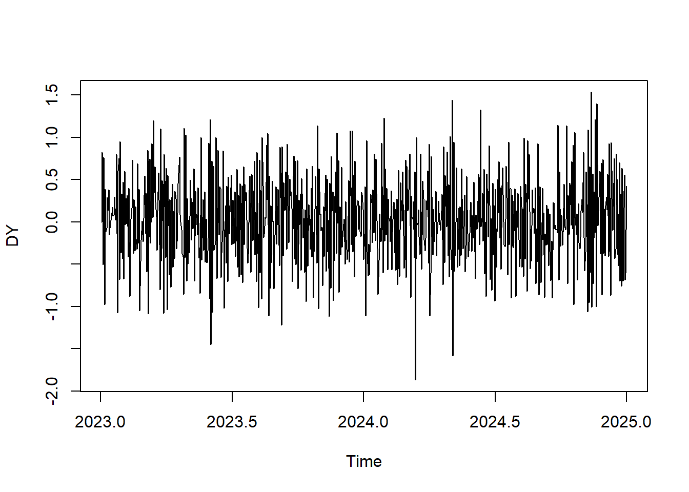
C4. In order to prepare the data, I started by loading the libraries (tidyverse , forecast , tseries) and then I converted the data into a time series format noting the daily nature of the data with frequency=365.
#converting to ts
Y <- ts(data$Revenue, start = c(2023, 1), frequency = 365)I checked for missing values to ensure there were no gaps in the data, and then plotted the data to visualize trends and any fluctuations.
Before exporting the cleaned data, I split the data into a train and test set, 80/20 split. I allocated the first 80% of the data to the training set, and the remaining 20% to the test set.
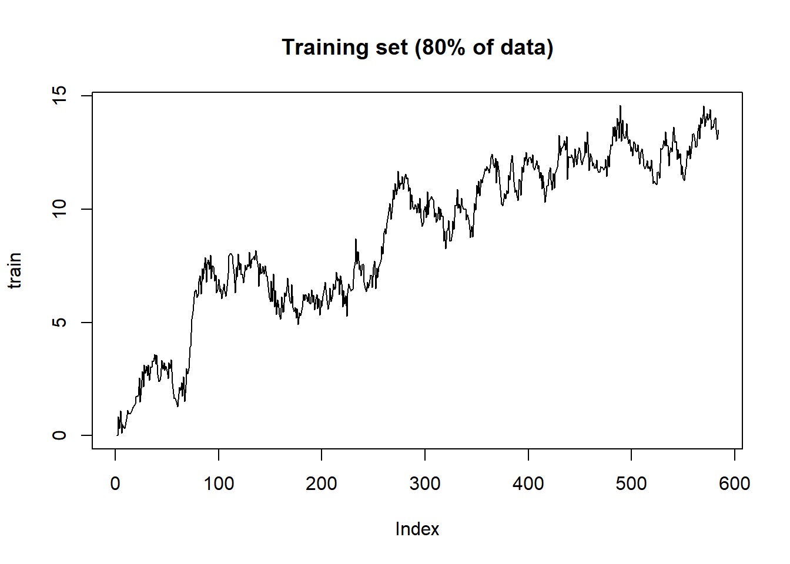
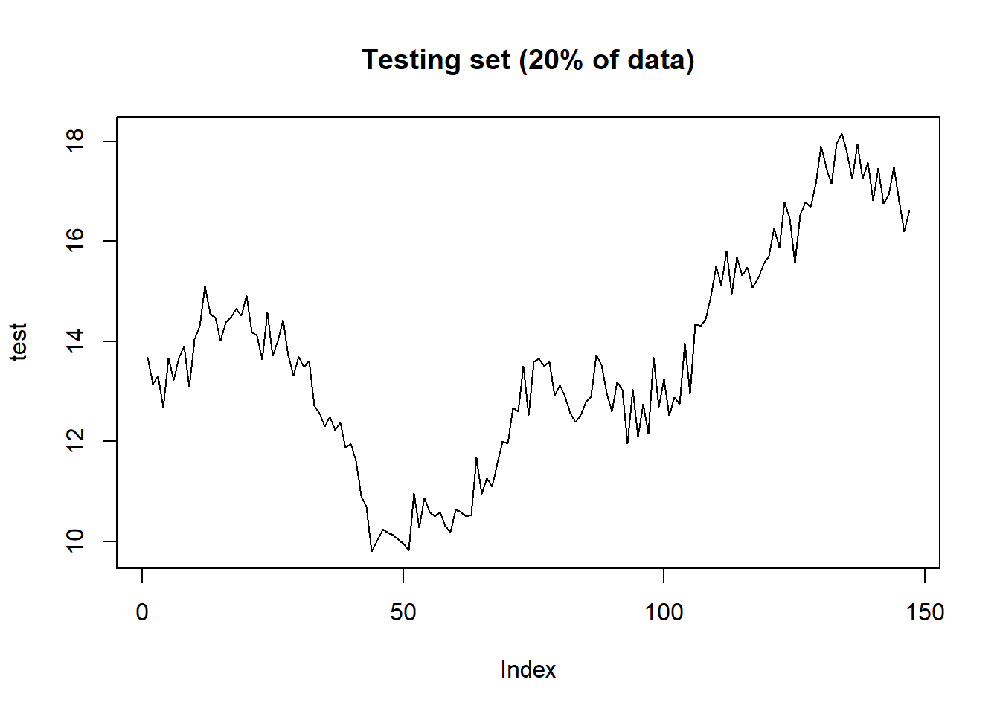
C5. A copy of the cleaned csv file will be included in the submission files. The cleaned csv file is named cleaned_ts_data.csv
Part IV: Model Identification and Analysis
D1. The seasonality component shows and IQR accounting for 29.1% of the total IQR meaning that the seasonal fluctuations have an impact on the variability of the data. This seasonality can also be seen in the plot below.
Call:
stl(x = Y, s.window = "periodic", t.window = 365, robust = TRUE)
Time.series components:
seasonal trend remainder
Min. :-2.1803841 Min. : 2.043455 Min. :-6.723049
1st Qu.:-0.8099809 1st Qu.: 6.963760 1st Qu.:-0.661487
Median :-0.1907993 Median :10.690851 Median : 0.032188
Mean : 0.0009227 Mean : 9.953382 Mean :-0.131404
3rd Qu.: 0.8467831 3rd Qu.:13.107337 3rd Qu.: 0.670740
Max. : 2.7027377 Max. :15.837858 Max. : 3.898453
IQR:
STL.seasonal STL.trend STL.remainder data
1.657 6.144 1.332 5.694
% 29.1 107.9 23.4 100.0
Weights:
Min. 1st Qu. Median Mean 3rd Qu. Max.
0.0000 0.8739 0.9452 0.8865 0.9871 1.0000
Other components: List of 5
$ win : Named num [1:3] 7311 365 365
$ deg : Named int [1:3] 0 1 1
$ jump : Named num [1:3] 732 37 37
$ inner: int 1
$ outer: int 15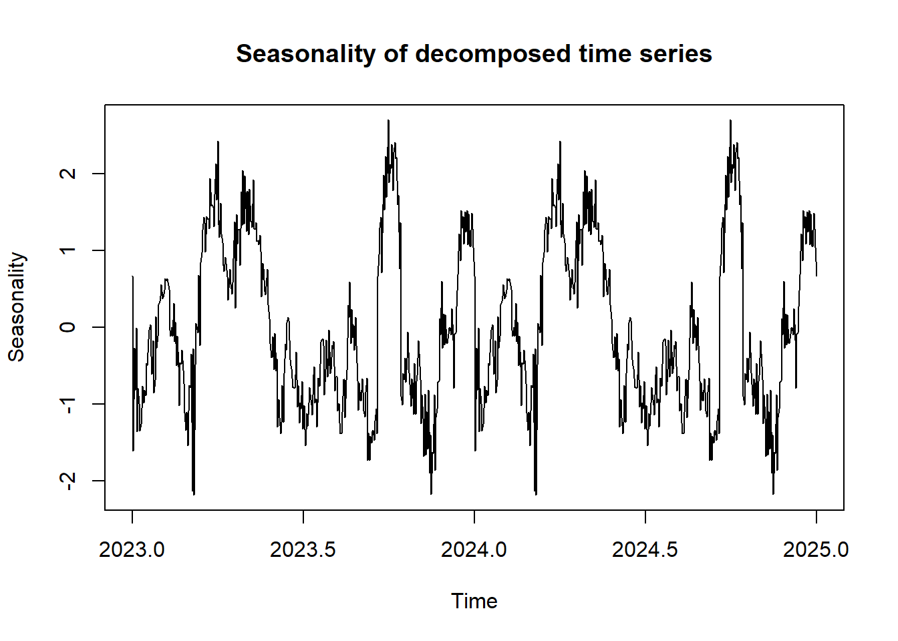
In addition, the spectral density plot shows that the highest spectral density happens at the lower end of the frequencies, suggesting a long term seasonality.
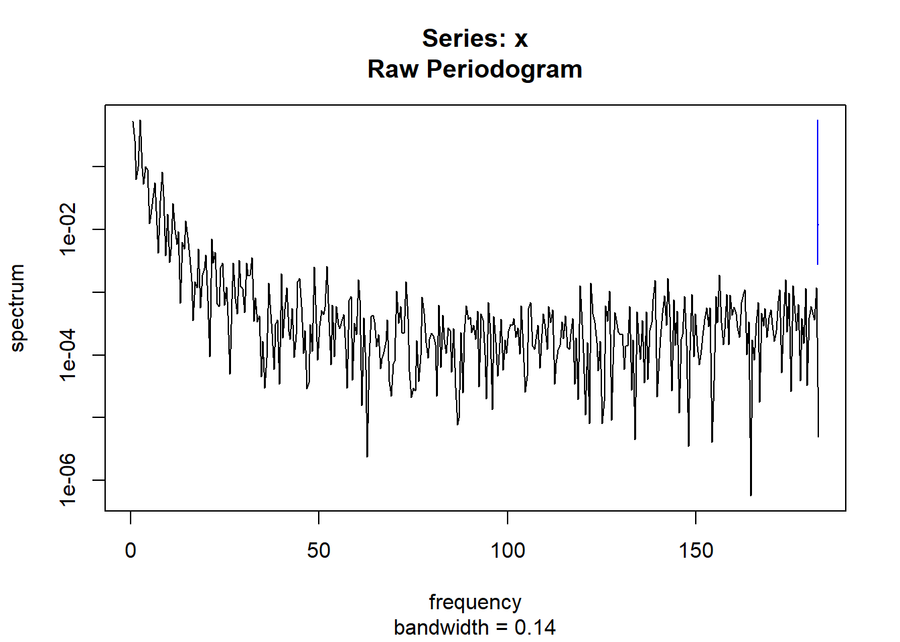
Trend
The decomposed time series plot shows a clean upward trend. The data begins in 2023 and gradually increases through 2025.
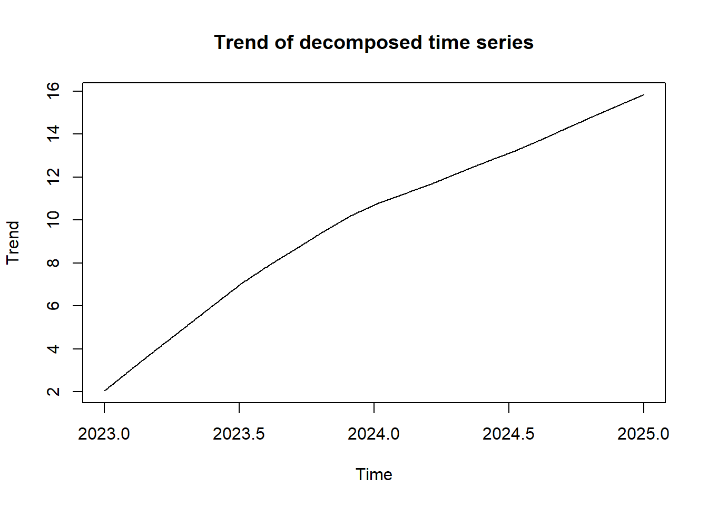
Min. 1st Qu. Median Mean 3rd Qu. Max.
2.043 6.964 10.691 9.953 13.107 15.838 ACF
In the Autocorrelation (ACF) plot of the differenced data, it appears that most values fall within the confidence lines. However, there are several lines that do pass the confidence lines indicating that there may be seasonality, or at least a strong relationship witht the previous lag. Seasonality can be examined further in the decomposition plot using stl(). This plot also shows a significant correlation at lag 2 and then tappers off, indicating an AR(2).
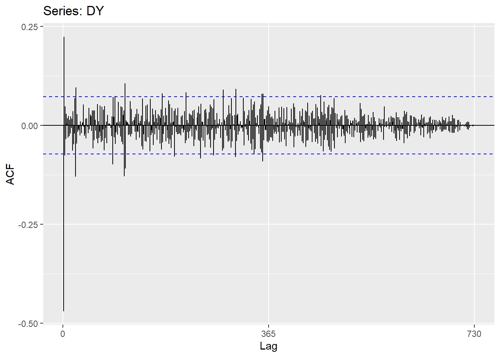
PACF
The Partial Autocorrelation (PACF) plot of the differenced data, looks very similar to the ACF plot where most of the values fall within the confidence interval lines. This would suggest that there is minimal partial autocorrelation at most lags. This plot shows a clear spike at lag 1 and then tappers off, indicating an AR(1). Because PACF better isolates the relationship at each lag, I will be interested in an ARMIA model with an AR(1).
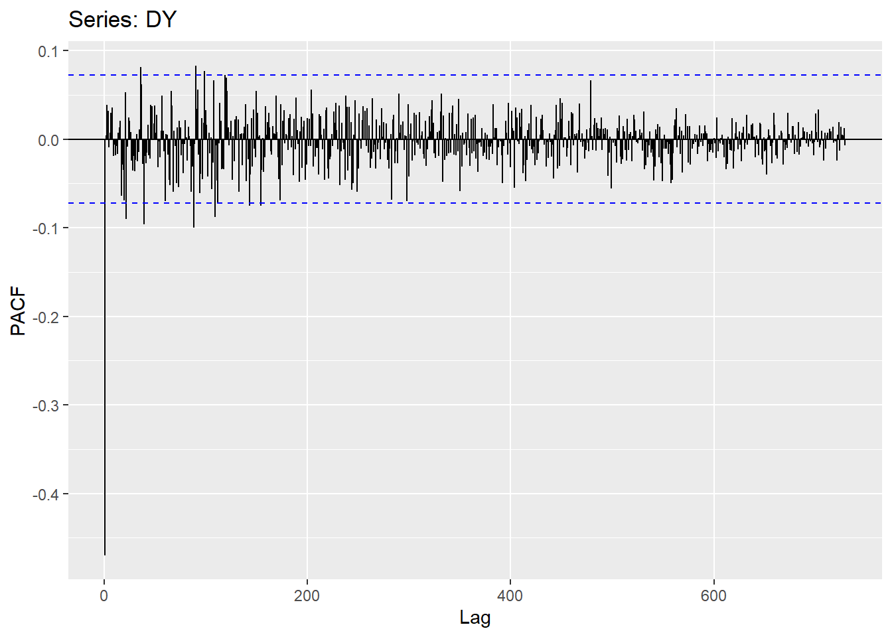
The decomposed time series plot shows several of the components already spoken about in previous sections, in addition to the remainder component. In essence, decomposition is the break down of the data set into its key components. The remainder component being the only one not yet spoken about explicitly, explains the portion of the data that can not be explained by the seasonal or tend components. In otherwords, the elements within this remainder component are the ones that do not follow a consistent trend or cyclical pattern (seasonality).
In this plot we can see that the remainder fluctuates around 0 with minor ups and downs. However, near the end of 2024 we can see a significant dip in the remainder that would suggest that during this period, an external or random event happened that affected the data which is why it wouldn’t be captured by the trend or seasonality in the data.
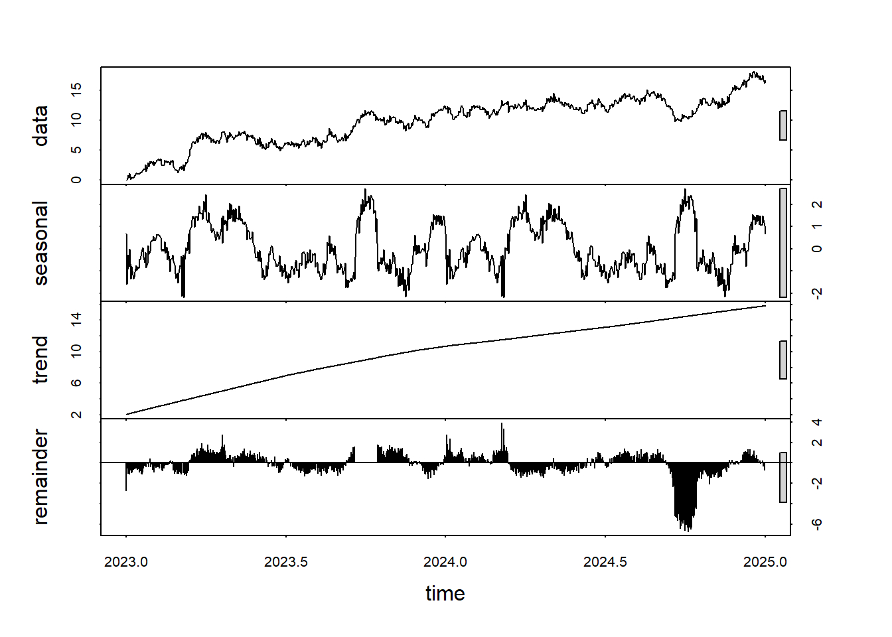
The Ljung-box test, tests the if the residuals show any autocorrelation. with a p-value far less than 0.05 (<2.2e-16) at lag 1, I can assume that there is some pattern or dependence that is not fully explained by the seasonality or trend mentioned earlier.
Box-Ljung test
data: decomposed$time.series[, "remainder"]
X-squared = 644.82, df = 1, p-value < 2.2e-16To confirm the residuals (remainder) do not have a trend, I computed the ADF once again but this time on the remainder component. We can see that the p-value (p-value=0.01) is less than the standard significance level of 0.05. While the data, statistically, appears to be stationary, the Ljung-box test would still indicate that there might still be some predictable relationship between the lags.
Augmented Dickey-Fuller Test
data: decomposed$time.series[, "remainder"]
Dickey-Fuller = -4.0837, Lag order = 9, p-value = 0.01
alternative hypothesis: stationaryThe ACF of the residuals plot shows that several peaks that are outside the confidence intervals. This means that the some patters or dependancy still exists in the data.

However, when looking at the PACF we can see that only lags 1 and 2 have a direct significant influence on the remainder component. After lag 2 all the spikes fall within the confidence interval and the spikes get smaller overtime. While the ACF plot suggests that there is autocorrelation at many different lags, the PACF plot clarifies that the patterns seen in the ACF are likely indirect relationships that stem from the first 2 lags.
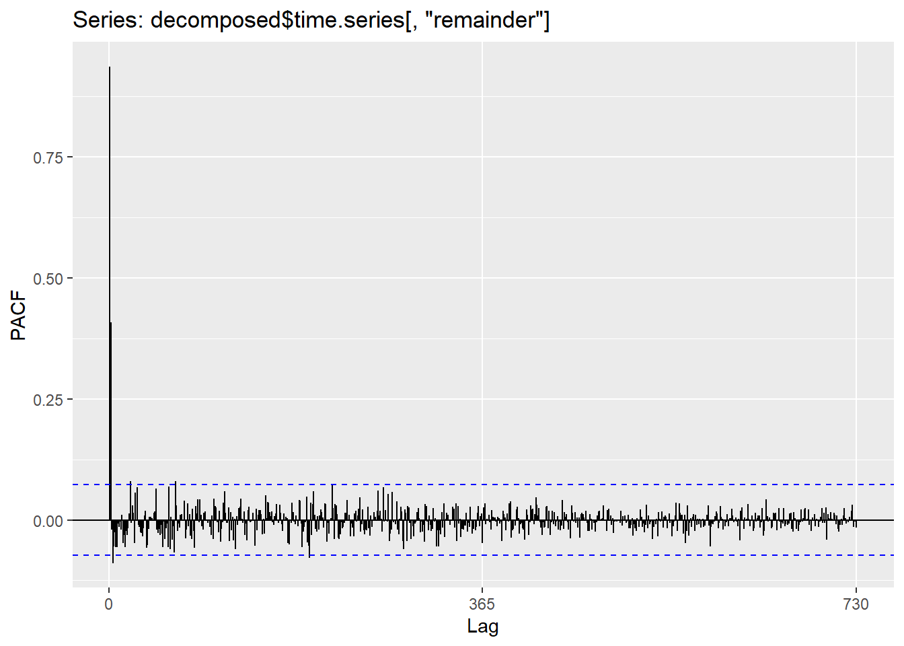
Decomposed Time Series
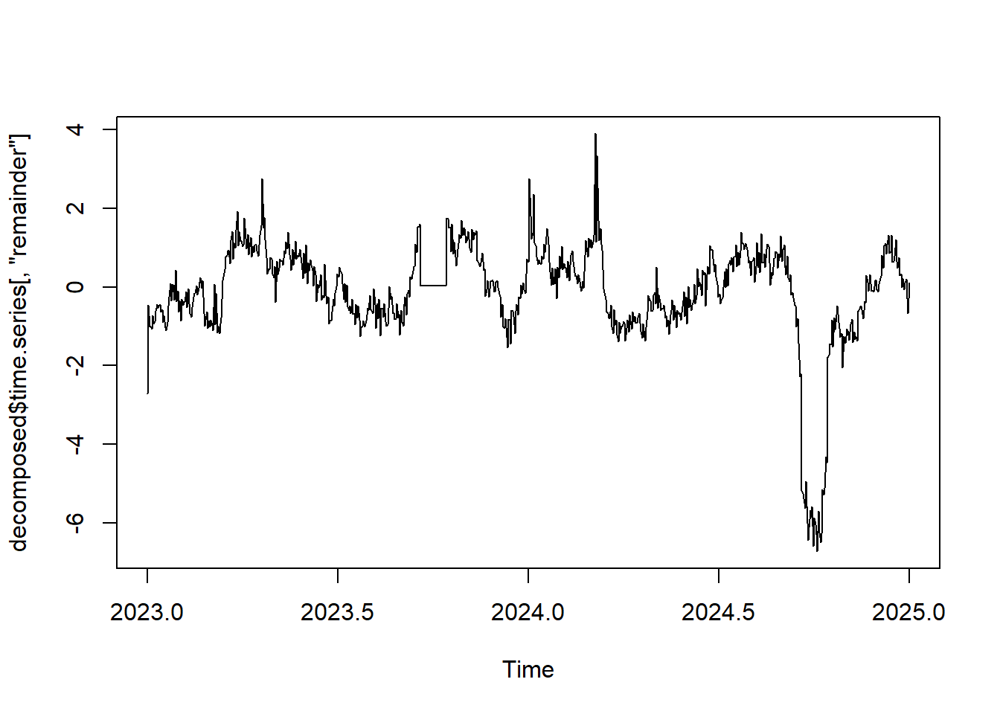
D2. I used auto.arima() to find the best ARIMA model. d=1 tells ARIMAto take the difference of the data before it fits the data. D=1 accounts for seasonality. Stepwise=FALSE trys all models to get the most accurate results. And lastly, approximation=FALSE ensures that the AIC values are not approximated. Run time was not an issue here so I set approximation to false (RDocumentation, n.d.).
fit_arima <- auto.arima(train, d=1, D=1, stepwise = FALSE, approximation = FALSE, trace = TRUE)
ARIMA(0,1,0) : 909.2825
ARIMA(0,1,0) with drift : 910.1682
ARIMA(0,1,1) : 800.4773
ARIMA(0,1,1) with drift : 798.946
ARIMA(0,1,2) : 776.4192
ARIMA(0,1,2) with drift : 776.048
ARIMA(0,1,3) : 775.7495
ARIMA(0,1,3) with drift : 775.0052
ARIMA(0,1,4) : 777.7842
ARIMA(0,1,4) with drift : 777.0359
ARIMA(0,1,5) : 779.7498
ARIMA(0,1,5) with drift : 779.0592
ARIMA(1,1,0) : 774.056
ARIMA(1,1,0) with drift : 773.0878
ARIMA(1,1,1) : 776.0741
ARIMA(1,1,1) with drift : 775.1125
ARIMA(1,1,2) : 776.0088
ARIMA(1,1,2) with drift : 775.4037
ARIMA(1,1,3) : 777.7843
ARIMA(1,1,3) with drift : 777.0377
ARIMA(1,1,4) : Inf
ARIMA(1,1,4) with drift : 779.0796
ARIMA(2,1,0) : 776.0734
ARIMA(2,1,0) with drift : 775.1118
ARIMA(2,1,1) : 777.6634
ARIMA(2,1,1) with drift : 776.6363
ARIMA(2,1,2) : 777.7935
ARIMA(2,1,2) with drift : 777.1338
ARIMA(2,1,3) : 779.86
ARIMA(2,1,3) with drift : 779.1622
ARIMA(3,1,0) : 775.885
ARIMA(3,1,0) with drift : 775.2674
ARIMA(3,1,1) : 777.8984
ARIMA(3,1,1) with drift : 777.2592
ARIMA(3,1,2) : 779.8004
ARIMA(3,1,2) with drift : 779.1123
ARIMA(4,1,0) : 777.8895
ARIMA(4,1,0) with drift : 777.2283
ARIMA(4,1,1) : Inf
ARIMA(4,1,1) with drift : Inf
ARIMA(5,1,0) : 779.846
ARIMA(5,1,0) with drift : 779.1125
Best model: ARIMA(1,1,0) with drift #accounting for trend with d=1. Tells arima that before it fits the data, take the difference of the data
#accounting for seasonality with D=1. Gets rid of the seasonality by taking the first seasonal difference
#stepwise=FALSE trying all models to get the most accurate results
#approximation=FALSE because time isnt an issue. If it were an issue thenapproximation could be set to TRUE but it would come at the cost of approximated AIC values.We can see that the best model, according the auto.arima() is ARIMA(1,1,0) with drift (accounting for the trend).
The model summary shows that the AR(1) that was mentioned in the D1 as a result of the PACF test was accurate. ‘I’, shows that difference has been applied, and ‘0’ indicates that there is no moving average in this model.
D3. The following plot shows the forecast with confidence intervals for 90 days in advance.
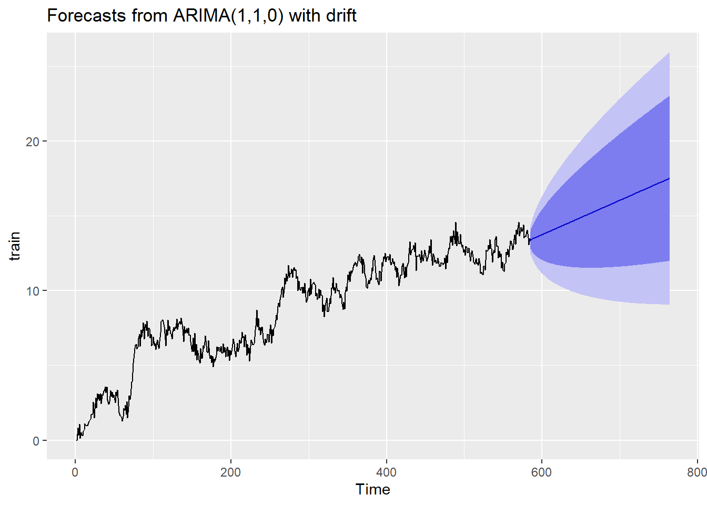
D4. In the following code output, you can see the daily values for 90 days as well as the upper and lower confidence values.
Forecast method: ARIMA(1,1,0) with drift
Model Information:
Series: train
ARIMA(1,1,0) with drift
Coefficients:
ar1 drift
-0.4605 0.0230
s.e. 0.0367 0.0133
sigma^2 = 0.2189: log likelihood = -383.52
AIC=773.05 AICc=773.09 BIC=786.15
Error measures:
ME RMSE MAE MPE MAPE MASE ACF1
Training set -1.354846e-05 0.4666594 0.3758019 -Inf Inf 0.8756595 -0.001967013
Forecasts:
Point Forecast Lo 80 Hi 80 Lo 95 Hi 95
585 13.34397 12.74438 13.94356 12.426978 14.26097
586 13.45161 12.77033 14.13289 12.409682 14.49354
587 13.43558 12.61875 14.25240 12.186346 14.68481
588 13.47649 12.57044 14.38254 12.090810 14.86218
589 13.49118 12.49293 14.48944 11.964482 15.01789
590 13.51795 12.44006 14.59585 11.869456 15.16645
591 13.53916 12.38509 14.69323 11.774162 15.30416
592 13.56293 12.33829 14.78757 11.690008 15.43585
593 13.58552 12.29378 14.87726 11.609975 15.56106
594 13.60865 12.25330 14.96400 11.535816 15.68148
595 13.63153 12.21534 15.04772 11.465660 15.79740
596 13.65453 12.18005 15.12901 11.399505 15.90955
597 13.67747 12.14690 15.20804 11.336667 16.01828
598 13.70044 12.11577 15.28511 11.276898 16.12398
599 13.72340 12.08641 15.36038 11.219846 16.22695
600 13.74636 12.05868 15.43404 11.165280 16.32744
601 13.76932 12.03243 15.50621 11.112973 16.42567
602 13.79228 12.00753 15.57703 11.062742 16.52182
603 13.81524 11.98388 15.64660 11.014422 16.61606
604 13.83820 11.96139 15.71501 10.967873 16.70853
605 13.86116 11.93998 15.78235 10.922967 16.79936
606 13.88412 11.91957 15.84868 10.879593 16.88866
607 13.90708 11.90009 15.91408 10.837653 16.97652
608 13.93005 11.88149 15.97860 10.797057 17.06303
609 13.95301 11.86372 16.04229 10.757725 17.14829
610 13.97597 11.84673 16.10520 10.719585 17.23235
611 13.99893 11.83048 16.16738 10.682570 17.31529
612 14.02189 11.81492 16.22886 10.646620 17.39716
613 14.04485 11.80002 16.28968 10.611681 17.47802
614 14.06781 11.78575 16.34987 10.577703 17.55792
615 14.09077 11.77208 16.40946 10.544639 17.63690
616 14.11373 11.75898 16.46849 10.512446 17.71502
617 14.13669 11.74642 16.52696 10.481085 17.79230
618 14.15965 11.73438 16.58492 10.450520 17.86879
619 14.18261 11.72284 16.64239 10.420716 17.94451
620 14.20557 11.71178 16.69937 10.391642 18.01951
621 14.22853 11.70117 16.75590 10.363269 18.09380
622 14.25150 11.69101 16.81198 10.335568 18.16742
623 14.27446 11.68127 16.86765 10.308515 18.24040
624 14.29742 11.67193 16.92290 10.282084 18.31275
625 14.32038 11.66299 16.97777 10.256254 18.38450
626 14.34334 11.65443 17.03225 10.231003 18.45567
627 14.36630 11.64623 17.08637 10.206310 18.52629
628 14.38926 11.63838 17.14014 10.182157 18.59636
629 14.41222 11.63088 17.19356 10.158525 18.66592
630 14.43518 11.62370 17.24666 10.135399 18.73496
631 14.45814 11.61685 17.29943 10.112761 18.80352
632 14.48110 11.61031 17.35190 10.090597 18.87161
633 14.50406 11.60406 17.40407 10.068892 18.93923
634 14.52702 11.59811 17.45594 10.047633 19.00642
635 14.54998 11.59244 17.50753 10.026805 19.07316
636 14.57295 11.58704 17.55885 10.006398 19.13949
637 14.59591 11.58191 17.60990 9.986398 19.20541
638 14.61887 11.57704 17.66069 9.966796 19.27094
639 14.64183 11.57242 17.71123 9.947579 19.33608
640 14.66479 11.56805 17.76153 9.928738 19.40084
641 14.68775 11.56392 17.81158 9.910262 19.46524
642 14.71071 11.56002 17.86140 9.892143 19.52928
643 14.73367 11.55635 17.91100 9.874371 19.59297
644 14.75663 11.55289 17.96037 9.856938 19.65633
645 14.77959 11.54966 18.00953 9.839835 19.71935
646 14.80255 11.54663 18.05847 9.823054 19.78205
647 14.82551 11.54381 18.10721 9.806588 19.84444
648 14.84847 11.54120 18.15575 9.790429 19.90652
649 14.87143 11.53877 18.20410 9.774571 19.96830
650 14.89440 11.53654 18.25225 9.759006 20.02979
651 14.91736 11.53450 18.30021 9.743728 20.09098
652 14.94032 11.53264 18.34799 9.728730 20.15190
653 14.96328 11.53096 18.39559 9.714007 20.21255
654 14.98624 11.52946 18.44302 9.699552 20.27292
655 15.00920 11.52813 18.49027 9.685361 20.33304
656 15.03216 11.52696 18.53735 9.671427 20.39289
657 15.05512 11.52597 18.58427 9.657745 20.45250
658 15.07808 11.52513 18.63103 9.644310 20.51185
659 15.10104 11.52445 18.67763 9.631117 20.57097
660 15.12400 11.52393 18.72408 9.618162 20.62984
661 15.14696 11.52356 18.77037 9.605440 20.68849
662 15.16992 11.52333 18.81651 9.592946 20.74690
663 15.19288 11.52326 18.86251 9.580675 20.80509
664 15.21585 11.52333 18.90836 9.568625 20.86307
665 15.23881 11.52354 18.95408 9.556790 20.92082
666 15.26177 11.52388 18.99965 9.545167 20.97837
667 15.28473 11.52437 19.04509 9.533753 21.03570
668 15.30769 11.52498 19.09039 9.522542 21.09283
669 15.33065 11.52573 19.13557 9.511532 21.14977
670 15.35361 11.52661 19.18061 9.500719 21.20650
671 15.37657 11.52761 19.22553 9.490100 21.26304
672 15.39953 11.52874 19.27032 9.479671 21.31939
673 15.42249 11.52999 19.31499 9.469430 21.37555
674 15.44545 11.53137 19.35954 9.459373 21.43153
675 15.46841 11.53286 19.40397 9.449497 21.48733
676 15.49137 11.53446 19.44829 9.439799 21.54295
677 15.51433 11.53618 19.49249 9.430276 21.59839
678 15.53730 11.53802 19.53657 9.420926 21.65366
679 15.56026 11.53996 19.58055 9.411746 21.70877
680 15.58322 11.54202 19.62442 9.402733 21.76370
681 15.60618 11.54418 19.66818 9.393885 21.81847
682 15.62914 11.54645 19.71183 9.385198 21.87308
683 15.65210 11.54882 19.75538 9.376671 21.92753
684 15.67506 11.55129 19.79883 9.368301 21.98182
685 15.69802 11.55387 19.84217 9.360087 22.03595
686 15.72098 11.55654 19.88542 9.352024 22.08994
687 15.74394 11.55932 19.92857 9.344113 22.14377
688 15.76690 11.56219 19.97162 9.336349 22.19746
689 15.78986 11.56516 20.01457 9.328731 22.25100
690 15.81282 11.56822 20.05743 9.321258 22.30439
691 15.83578 11.57137 20.10020 9.313926 22.35764
692 15.85875 11.57462 20.14287 9.306735 22.41076
693 15.88171 11.57795 20.18546 9.299682 22.46373
694 15.90467 11.58138 20.22796 9.292765 22.51657
695 15.92763 11.58489 20.27037 9.285982 22.56927
696 15.95059 11.58849 20.31269 9.279332 22.62184
697 15.97355 11.59217 20.35493 9.272813 22.67429
698 15.99651 11.59594 20.39708 9.266423 22.72660
699 16.01947 11.59979 20.43915 9.260160 22.77878
700 16.04243 11.60373 20.48113 9.254023 22.83084
701 16.06539 11.60775 20.52304 9.248011 22.88277
702 16.08835 11.61184 20.56486 9.242121 22.93458
703 16.11131 11.61602 20.60661 9.236352 22.98628
704 16.13427 11.62027 20.64828 9.230702 23.03785
705 16.15723 11.62460 20.68987 9.225171 23.08930
706 16.18020 11.62901 20.73138 9.219756 23.14063
707 16.20316 11.63349 20.77282 9.214457 23.19186
708 16.22612 11.63805 20.81419 9.209271 23.24296
709 16.24908 11.64268 20.85548 9.204198 23.29396
710 16.27204 11.64738 20.89670 9.199236 23.34484
711 16.29500 11.65216 20.93784 9.194384 23.39561
712 16.31796 11.65700 20.97892 9.189640 23.44628
713 16.34092 11.66192 21.01992 9.185003 23.49684
714 16.36388 11.66690 21.06086 9.180473 23.54729
715 16.38684 11.67196 21.10173 9.176047 23.59764
716 16.40980 11.67708 21.14253 9.171725 23.64788
717 16.43276 11.68227 21.18326 9.167506 23.69802
718 16.45572 11.68752 21.22393 9.163387 23.74806
719 16.47868 11.69284 21.26453 9.159369 23.79800
720 16.50165 11.69823 21.30506 9.155450 23.84784
721 16.52461 11.70368 21.34554 9.151629 23.89758
722 16.54757 11.70919 21.38595 9.147905 23.94723
723 16.57053 11.71476 21.42629 9.144277 23.99678
724 16.59349 11.72040 21.46658 9.140744 24.04623
725 16.61645 11.72610 21.50680 9.137304 24.09559
726 16.63941 11.73186 21.54696 9.133957 24.14486
727 16.66237 11.73768 21.58706 9.130703 24.19404
728 16.68533 11.74356 21.62711 9.127539 24.24312
729 16.70829 11.74949 21.66709 9.124465 24.29212
730 16.73125 11.75549 21.70702 9.121480 24.34102
731 16.75421 11.76154 21.74688 9.118584 24.38984
732 16.77717 11.76765 21.78669 9.115774 24.43857
733 16.80013 11.77382 21.82645 9.113051 24.48722
734 16.82310 11.78004 21.86615 9.110414 24.53578
735 16.84606 11.78632 21.90579 9.107861 24.58425
736 16.86902 11.79266 21.94538 9.105392 24.63264
737 16.89198 11.79904 21.98491 9.103006 24.68095
738 16.91494 11.80548 22.02439 9.100703 24.72917
739 16.93790 11.81198 22.06382 9.098481 24.77732
740 16.96086 11.81853 22.10319 9.096339 24.82538
741 16.98382 11.82513 22.14252 9.094277 24.87336
742 17.00678 11.83178 22.18179 9.092295 24.92127
743 17.02974 11.83848 22.22100 9.090390 24.96909
744 17.05270 11.84523 22.26017 9.088564 25.01684
745 17.07566 11.85204 22.29929 9.086814 25.06451
746 17.09862 11.85889 22.33836 9.085141 25.11211
747 17.12158 11.86579 22.37738 9.083543 25.15963
748 17.14455 11.87274 22.41635 9.082019 25.20707
749 17.16751 11.87974 22.45527 9.080570 25.25444
750 17.19047 11.88679 22.49414 9.079195 25.30174
751 17.21343 11.89389 22.53297 9.077892 25.34896
752 17.23639 11.90103 22.57175 9.076661 25.39612
753 17.25935 11.90822 22.61048 9.075502 25.44320
754 17.28231 11.91545 22.64916 9.074414 25.49021
755 17.30527 11.92274 22.68780 9.073396 25.53715
756 17.32823 11.93006 22.72640 9.072447 25.58401
757 17.35119 11.93744 22.76495 9.071568 25.63082
758 17.37415 11.94485 22.80345 9.070757 25.67755
759 17.39711 11.95232 22.84191 9.070014 25.72421
760 17.42007 11.95982 22.88033 9.069338 25.77081
761 17.44303 11.96737 22.91870 9.068729 25.81734
762 17.46600 11.97496 22.95703 9.068186 25.86380
763 17.48896 11.98260 22.99531 9.067709 25.91020
764 17.51192 11.99028 23.03356 9.067297 25.95654D5. The full code file will be included in the submission files. The code file will be named D213_code.R
Part V: Data Summary and Implications
E1. As mentioned in section D2 the ARIMA model with the best fit is ARIMA(1,1,0) with drift.
Series: train
ARIMA(1,1,0) with drift
Coefficients:
ar1 drift
-0.4605 0.0230
s.e. 0.0367 0.0133
sigma^2 = 0.2189: log likelihood = -383.52
AIC=773.05 AICc=773.09 BIC=786.15
Training set error measures:
ME RMSE MAE MPE MAPE MASE ACF1
Training set -1.354846e-05 0.4666594 0.3758019 -Inf Inf 0.8756595 -0.001967013The predictions intervals are 80% (Lo), and 95%(Hi) for each forecast point. For example, at point 585, the forecast is 13.34397, with an 80% interval of 12.74438 on the low end and 13.94356 on the high end. Likewise, 95% interval of 12.426978 on the low end and 14.26097 on the high end. In other wards, for point 585, I can say that there is an 80% chance that the value is between 13.34397 and 12.74438. However, there is a 95% chance that the value is between 12.426978 and 14.26097 . So the higher the confidence, the wider the range because it is reflecting the greater uncertainty in the prediction.
The forecast length is 180 days worth of data because the data contains enough information to identify season trends or patterns.
The error metrics that are provided in the summary function include RMSE and MAE as well as others. To test how well the data forecasts the trained data, I will be comparing the test set vs the training set.
ME RMSE MAE MPE MAPE MASE
Training set -1.354846e-05 0.4666594 0.3758019 -Inf Inf 0.8756595
Test set -1.432728e+00 2.2949433 1.8155156 -12.74361 15.11012 4.2303496
ACF1
Training set -0.001967013
Test set NAThis ARIMA model (1,1,0) appears to work well with the training data as indicated by the low RMSE (0.4666594), MASE (0.8756595), meaning that it first the historical data well. However, when tested on the unseen data, the model does not do as well. The errors RMSE (2.2949433), and MASE (4.2303496) are much higher with the test data, and the model tends to underestimate the values as evidenced by the negative ME (-1.432728e+00).
E2. Annotated visual of the forecast and test data:
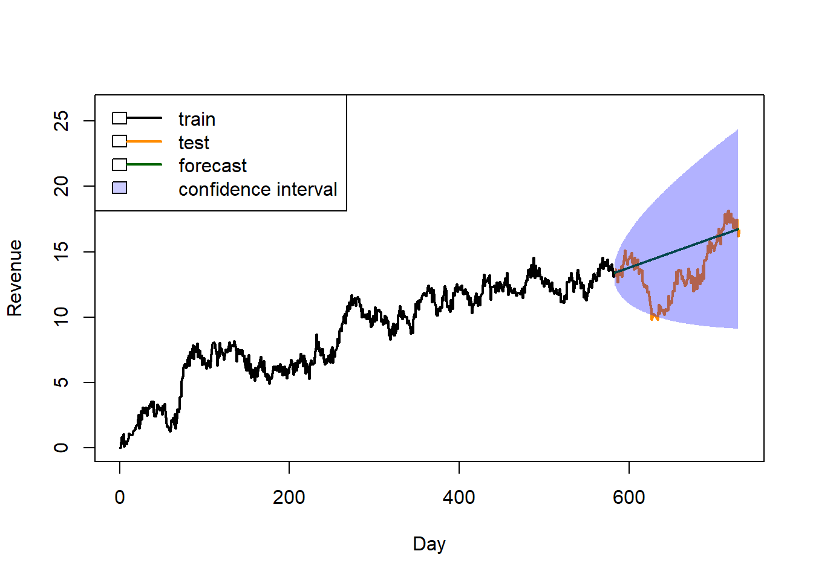
E3. This model performs well with the historical data in that it can identify patters and trends accurately but seems to struggle with future data as it tends to underestimate the actual values. Because of this I would recommend that the company take into account the model’s tendency to under predict revenue and expect that the actual revenue will be someone higher. This could also imply that the demand is higher as well, and therefore the company should take this into account when allocating resources or esitimating inventory. Additionally I would recommend monittoring this model’s performance on a regular schedule to compare the actual and foretasted numbers.
Part VI: Reporting
G-H. Acknowledge sources, using in-text citations and references, for content that is quoted, paraphrased, or summarized.
GeeksforGeeks. (2024, October 9). Time series in R - Stationarity testing. GeeksforGeeks. https://www.geeksforgeeks.org/time-series-in-r-stationarity-testing/
RDocumentation. (n.d.). auto.arima function – forecast package (version 8.16). https://www.rdocumentation.org/packages/forecast/versions/8.16/topics/auto.arima
StatisticsHowTo. (n.d.). ADF – Augmented Dickey-Fuller test. StatisticsHowTo. https://www.statisticshowto.com/adf-augmented-dickey-fuller-test/
weecology. (2020, September 21). Introduction to making forecasts from time-series models in R [Video]. YouTube. https://www.youtube.com/watch?v=kyPg3jV4pJ8